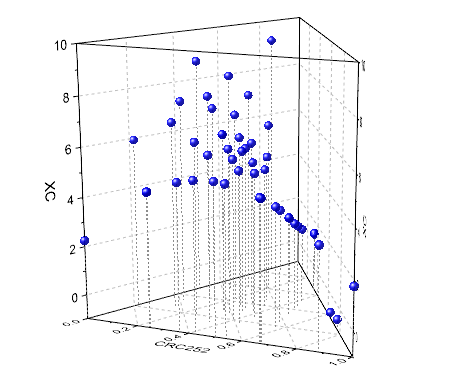
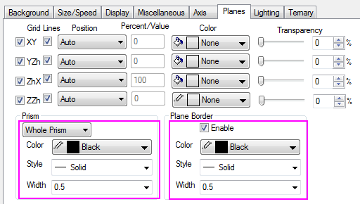
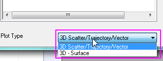
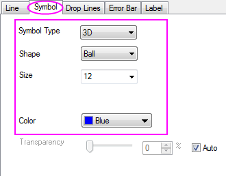
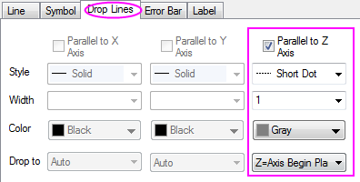
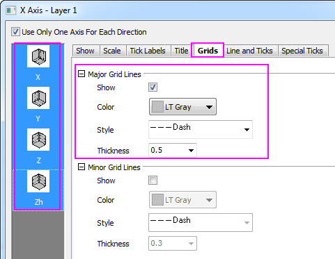
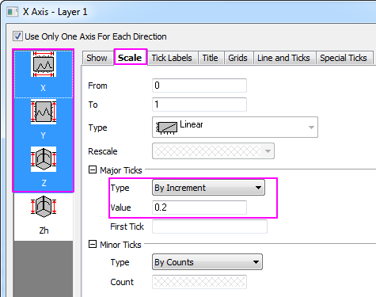
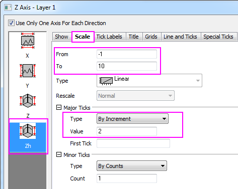
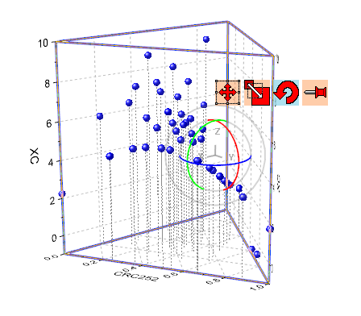

Ternäres 3D-Punktdiagramm mit Ankerlinien
3D-Ternary-Scatter
Zusammenfassung
In diesem Tutorial wird ein ternäres 3D-Punktdiagramm aus XYZZ-Arbeitsblattdaten erstellt. Zuerst wird die Zeichnung als ein ternäres 3D-Oberflächendiagramm erstellt und dann in ein Punktdiagramm verwandelt. Dann werden Ankerlinien für die Datenpunkte hinzugefügt, um auf ihre genauen Positionen in der Achsenebene zu verweisen.
- 
Origin-Version mind. erforderlich: Origin 2015 SR0
Was Sie lernen werden
Dieses Tutorial zeigt Ihnen, wie Sie:
- ein ternäres 3D-Punktdiagramm erzeugen.
- Ankerlinien für Datenpunkte zeichnen.
Schritte
Dieses Tutorial basiert auf dem Tutorialdaten-Projekt: <Origin-Verzeichnis>\Samples\Tutorial Data.opj.
- Öffnen Sie das Tutorialdaten-Projekt und navigieren Sie zu dem Ordner 3D Ternary Surface.
- Aktivieren Sie das Arbeitsblatt 3D Ternary Scatter in der Mappe Book1F und markieren Sie die Spalten col(C) und col(D). Wählen Sie Zeichnen: 3D-Oberfläche: Ternäre 3D-Oberfläche mit Farbabbildung, um eine Oberfläche mit Farbabbildung zu erzeugen.
- Klicken Sie zum Öffnen des Dialogs Details Zeichnung doppelt auf die Zeichnung. Markieren Sie Layer1 im linken Bedienfeld und wechseln Sie zur Registerkarte Ebenen im rechten Bedienfeld. Wählen Sie für Prisma die Option Gesamtes Prisma und aktivieren Sie das Kontrollkästchen Ebenengrenze.
- 
- Gehen Sie zurück zum linken Bedienfeld und klicken Sie auf Layer1 (achten Sie darauf, dass das Kontrollkästchen neben dem Symbol von Layer1 nicht deaktiviert wird) und markieren Sie die Zeichnung unter dem Symbol von Layer1. Ändern Sie unten im Dialog Details Zeichnung den Diagrammtyp in 3D-Streu-/Ankerlinien/Vektordiagramm.
- 
- Kehren Sie zurück zum linken Bedienfeld und klicken Sie auf Original (unter der Zeichnung). Gehen Sie im rechten Bedienfeld auf die Registerkarte Symbole und duplizieren Sie die folgenden Einstellungen:
- 
- Jetzt werden die Ankerlinien gezeichnet. Wählen Sie Ihr Punktdiagramm (Original) im linken Bedienfeld aus. Wechseln Sie im rechten Bedienfeld zur Registerkarte Ankerlinien. Aktivieren Sie das Kontrollkästchen Parallel zur Z-Achse. Ändern Sie Stil in Punkte Kurz, Breite in 1, Farbe in Grau und Führen zu in Z=Achsenanfang Ebene. Bestätigen Sie mit OK, um den Dialog Details Zeichnung zu schließen.
- 
- Klicken Sie doppelt auf die Achse, um den Dialog Achsen zu öffnen. Drücken Sie im linken Bedienfeld auf die Strg-Taste, um die Achsen X, Y, Z und Zh auszuwählen. Gehen Sie dann zur Registerkarte Gitternetze, um die Einstellungen für die Hauptgitternetzlinien, wie im folgenden Bild zu sehen, benutzerdefiniert zu definieren. Klicken Sie auf OK.
- 
- Um die Skalierung und die Haupthilfsstriche der X-/Y-/Z-Achse benutzerdefiniert anzupassen, drücken Sie die Strg-Taste und wählen Sie die X-, Y- und Z-Achse im linken Bedienfeld. Wechseln Sie dann zur Registerkarte Skalierung, um Große Hilfsstriche > Werte auf 0,2 festzulegen, wie im Bild unten zu sehen:
- 
- Um die Skalierung und die großen Hilfsstriche der Zh-Achse benutzerdefiniert festzulegen, wählen Sie die Zh-Achse und wechseln dann zur Registerkarte Skalierung. Passen Sie den Skalierungsbereich und Große Hilfsstriche > Wert wie im Folgenden gezeigt an:
- 
- Klicken Sie einmal in den Layerrahmen (aber nicht auf die Zeichnung), um die Funktionen Verschieben/In der Größe verändern/Drehen zu aktivieren. Drehen Sie die Zeichnung, bis Sie sie in eine bessere Ansicht gezogen haben. Alternativ können Sie die Hilfsmittel auf der Symbolleiste 3D-Drehung verwenden.
